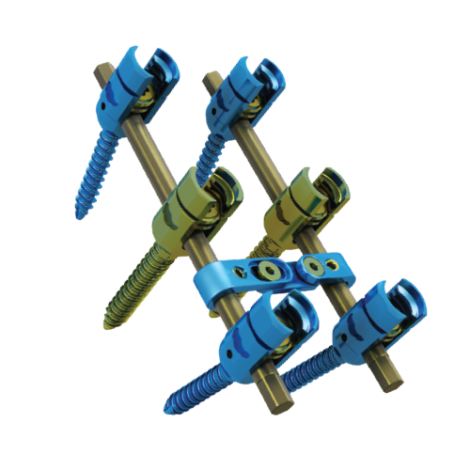

Sistema Avançado de Fixação Espinhal
- Produzido em liga de titânio
- Parafuso Monoaxial e poliaxial com perfil baixo e tratamento de superfície porosa
- Rosca de perfil quadrado – torque de fechamento interno não expande a cabeça do parafuso
- Disponível nos diâmetros de Ø4,8, 5,5, 6,5, 7,3, 7,7, 8,1 mm.
- Comprimentos que variam de 25 a 55mm
- Torres de Mobilidade Exclusiva – facilita a derotação